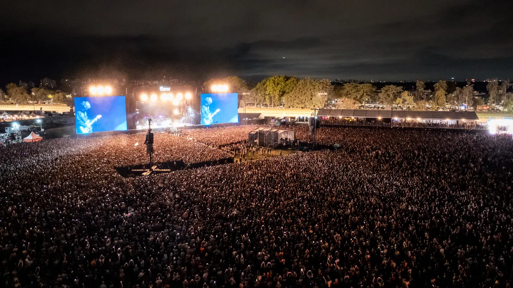

Nuestros Valores Principales
- Acceso libre y actualizado a la cartelera semanal.
- Apoyo continuo a artistas, bandas y recintos independientes.
- Compromiso con la difusión cultural accesible y responsable.
ConcertWeek
Nos mueve la pasión, la adrenalina de las preventas y esa energía inigualable que solo se siente cuando se apagan las luces del estadio. Nuestra misión diaria es transformar la típica y aburrida cartelera de fechas en una experiencia emocionante, reuniendo en un solo lugar los shows más esperados, los festivales que hacen historia y las giras imponentes que revolucionan el país.
"Nuestra historia se escribe con cada entrada en mano, cada viaje compartiendo auriculares y esa hermosa locura de querer vivir la vida a través de los acordes de un concierto en directo."Somos Musica,somos entretenimiento y somos mas que una pasion.

"Lo que empezó como una simple libreta anotando fechas de recitales, hoy es el punto de encuentro definitivo para vivir, sentir y compartir la energía de los mejores escenarios de Argentina."